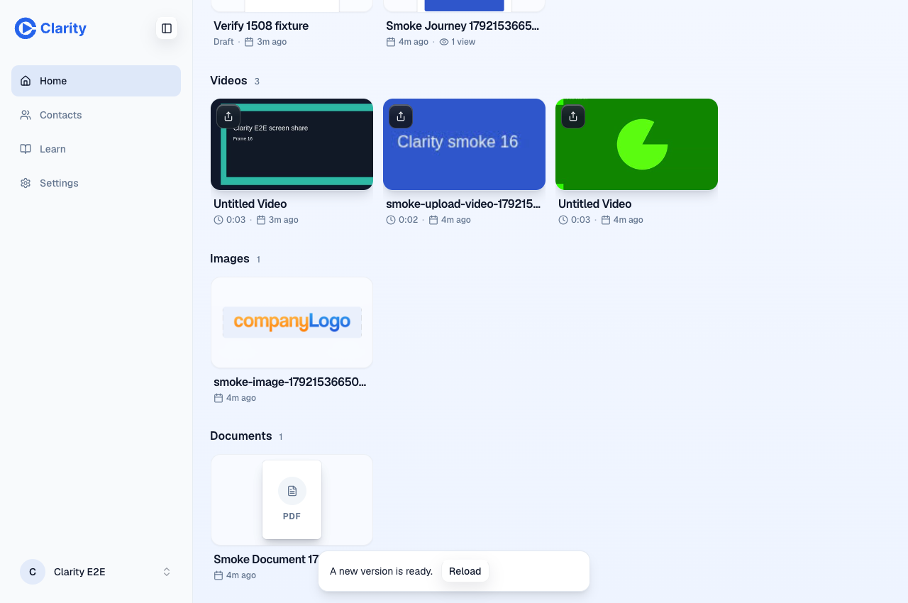
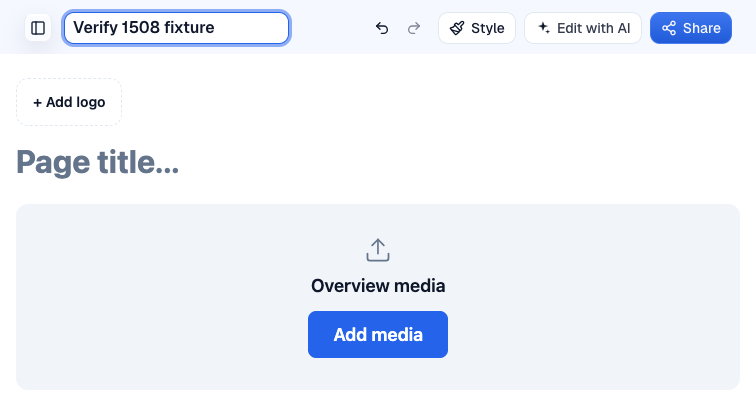
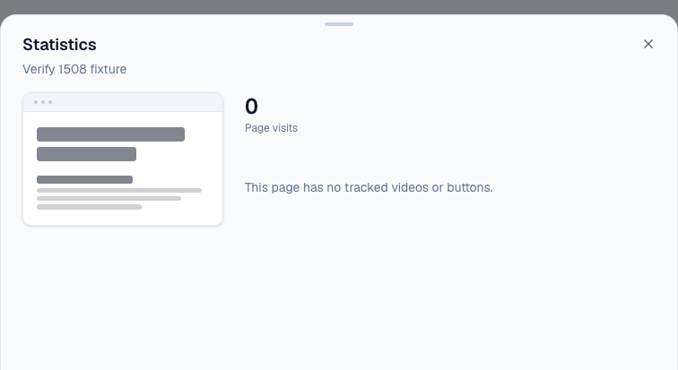
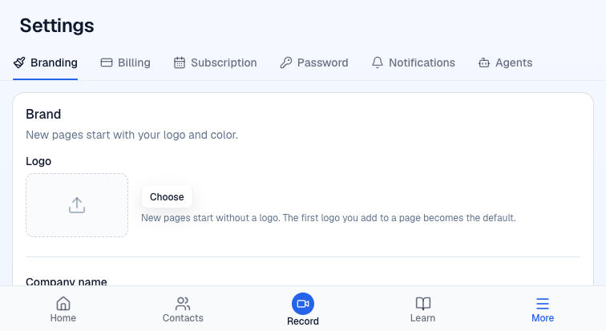
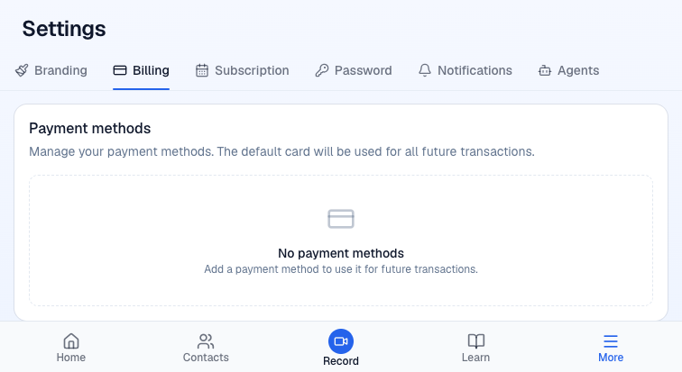
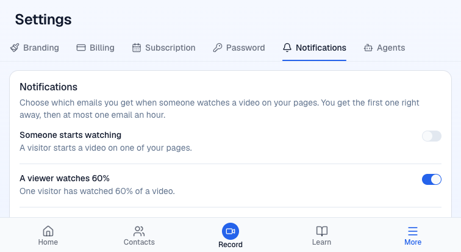

The current build shows a false reload notice after opening page stats. CI also fails two new boundary tests. The remaining requested runtime checks pass.
Independent test run on 16 October 2026. No product code, labels, merge, or deployment changes. Preview only.
https://pr-1508.clarity-video.workers.dev
Head and deployed commit 678d41e6b504ba2e7f3a492d5626674d8fa8338d
Main registry compared at 61274a6f582d6588a3d7372ad39316dbc34c043f.
Signed-in doctor passed before and after testing. The deploy-info SHA equals the requested head, so a tree-equivalence comparison was unnecessary. Doctor lines 1–4, final doctor, deploy-info.
Each row names the evidence and the failure it detects. Screenshots below show seeded test content only. Private response bodies, identities, passwords, cookies, and bearer tokens remain local.
| Check | Result | Evidence and failure detection |
|---|---|---|
| 1. Browser action route | Pass | Assertions lines 1–2 deep-compare page stats against the legacy GET data and every mapped profile, brand, and notification field against the old GET routes. This fails on a field or value difference. The action stats envelope is {stats}; legacy data is unwrapped for comparison. Real response statuses show unknown and constructor 404, malformed JSON 400, no session 401, and cross-origin POST 403. A known other-account page returns 404 after the owning account successfully reads it. These checks inspect bodies as well as status. |
| 2. Library, editor, stats, Settings | Pass | Created a temporary page through New page, changed its name, waited for its saved editor URL, returned to Library, and opened Statistics through the card menu. The modal shows the API's zero visits. Settings log lines 3–8 covers Branding, Billing, Subscription, Password, Notifications, and Agents. Network log records the new stats POST and existing settings GETs with 200 responses. Screenshots show actual controls and content. Missing expected text or modal, page errors, or failed responses would fail this drive. No billing, password, or settings mutations were made. |
| 3. Current build notice | Fail | Notice log lines 1–4 shows zero notices after fresh Home, a successful stats action with X-Clarity-Build: 678d41e6-dirty, then the unwanted notice. Build IDs shows the served client compares against 678d41e6. Reload works, but the next normal stats request recreates the notice. This is a real mismatch in the deployed build IDs, with no interception in this check. |
| 3. Simulated mismatch and Reload | Pass | Mismatch assertion confirms a real action response was intercepted with verify-simulated-build, the notice appeared, and Reload navigated and cleared it. The test checks the intercepted response header and visible notice, then removes interception before Reload. Pending unsaved edits were not exercised. |
| 4. Agent door and reads | Pass | The preview agent door is open. Parity assertion deep-compares all 34 live tools against main's registry by name, description, and input schema. Conformance passes 13/13, including authenticated whoami, tools/list, mixed-auth refusal and permission refusal. Live evals pass page-views and brand-settings with a fresh gpt-6-sol MCP seat. The Proof section names no concrete eval IDs, so these two tasks cover the changed reads. The named read/settings suites also pass 36 tests locally. A tool addition, schema or description difference, read refusal, invented view count, or incorrect settings answer can fail these checks. |
| 5. Migration | Pass | Deploy excerpt cites original deploy log lines 6647–6666. Line 6665 marks 0049_commit_guards.sql successful on the preview auth D1. A migration error or absent success row would fail this check. No production or staging database was used. |
| CI prerequisite | Fail | CI excerpt cites original log lines 3740 and 3795. Tests “a handler importing a fenced store goes red” and “a direct editor fetch goes red” throw Cannot read properties of undefined (reading 'match') in ESLint's max-lines-per-function. The PR Preview job passes. WorkOS passes on its first run, so no job rerun was needed. These CI failures are separate from the runtime notice regression. |
Reproduce on a fresh preview tab. Open Home, open the temporary page's card menu, choose Statistics, then close the modal. The current build says a new version is ready. Reload clears it until another stats request.






The completed Settings drive captured no page exceptions or non-200 API responses. The network includes real action and legacy settings calls. Some request retries were needed because local outbound connections to GitHub and Cloudflare failed. A foreign-account Library read once returned D1_ERROR: Network connection lost; the later ownership check passed. These are reported as network flakes, not proven baseline product defects.
The first automation attempts had locator and dialog-wait mistakes. Corrected drives produced the evidence cited above. The notice regression reproduces without interception. No production or staging requests were made. Public report uses only mock fixture content and sanitized logs.